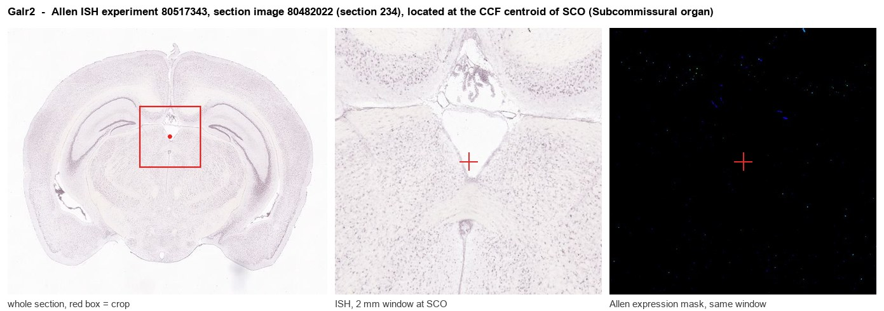

Galr2
Galanin receptor type 2 (GAL2-R) (GALR-2)
Spatial tier: STRICT_EXCLUSIVE · Class: GPCR · Top region: SCO (Subcommissural organ) · Positive regions: 12/554
50.5Discovery Score
37.4Targetability Score
CEvidence grade C
What this means: Galr2: predicted fine-region profile is strict-exclusive, with 12 positive regions out of 554 (limit 12); direct spatial validation is required.
Function in SCO: evidence, prediction, innovation
- Gene function
- Galr2 encodes galanin receptor 2, a class-A GPCR for the 29/30-residue neuropeptide galanin and for spexin. Unlike Gi-coupled GalR1 and GalR3 it couples mainly to Gq/11, raising IP3 and Ca2+, and engages Go and ERK/PKC. Its actions are trophic, neuroprotective, anxiolytic and antinociceptive.
- Region function
- The subcommissural organ is a secretory ependymal gland under the posterior commissure at the third-ventricle/aqueduct junction, releasing SCO-spondin into CSF to form Reissner's fibre and shaping aqueduct patency, CSF flow and axial morphogenesis.
- Published in this region
- inferred No region-specific literature found. Closest: the SCO receives dense serotonergic, GABAergic and peptidergic innervation regulating its secretion (Jimenez et al. 2001), and GalR2 activation is trophic in hippocampal neurons (Elliott-Hunt et al. 2007), with Galr2-null mice showing reduced neurite outgrowth and altered nociception (Hobson et al. 2006).
- Predicted function
- Prediction: GalR2 on SCO ependymal/hypendymal cells lets galaninergic afferents or CSF-borne galanin/spexin raise Ca2+ and drive secretion, tuning SCO-spondin release to arousal and stress. Intracerebroventricular AR-M1896 or M1145 should increase granule discharge and Reissner's fibre mass; Galr2 deletion or M871 should lower secretory tone and may cause SCO hypoplasia and aqueductal stenosis.
- Innovation
- ★★★★★ 5/5 Galanin signalling in the SCO is entirely unstudied despite documented peptidergic innervation and a full GalR2 toolkit.
- Tools
- Galr2-null mice (Hobson et al. 2006); Gal-Cre, Gal-IRES-Cre; Sspo-Cre/Sspo-CreER; agonists AR-M1896, M1145, spexin analogues; antagonist M871; anti-GalR2 antibodies are weak, so use RNAscope.
- References
Direct evidence located at the region

Allen ISH experiment 80517343, section image 80482022 (section 234): the section that contains the CCF centroid of Subcommissural organ according to the Allen image-to-atlas alignment (reference_to_image), with a 2 mm window around that point. Left: whole section, red box = window. Middle: ISH signal. Right: Allen's expression-mask view of the same window. open this image in the Allen viewer
Look it up yourself: Allen Mouse Brain ISH for Galr2Allen reference atlas: SCO (structure 599626923)ABC Atlas MERFISH viewer(in the ABC Atlas choose dataset MERFISH-C57BL6J-638850-CCF, colour cells by gene "Galr2" or by parcellation_substructure "SCO")All genes confined to SCO + 3-D brain
Direct spatial evidence
MERFISH REGION LOCATOR

DIRECT ALLEN ISH

DIRECT ALLEN ISH

Regional expression figure

Predicted WMB × fine-CCF profile; not direct full-transcriptome spatial measurement.
Spatial profile
Evidence and specificity
- Evidence status
- PREDICTED_FINE
- Direct sources
- None; predicted localization only
- Exclusive threshold
- 12 positive regions out of 554
- Spatial specificity
- 0.405
- Top-region fraction
- 0.120
- Filter status
- PASS
Interpretation limits
- Cell-type-to-region projection is imputed expression, not direct spatial measurement.
- Adult reference atlases do not establish stability across age, sex, strain, state, or disease.
- Transcript abundance does not guarantee protein abundance or genetic-tool performance.